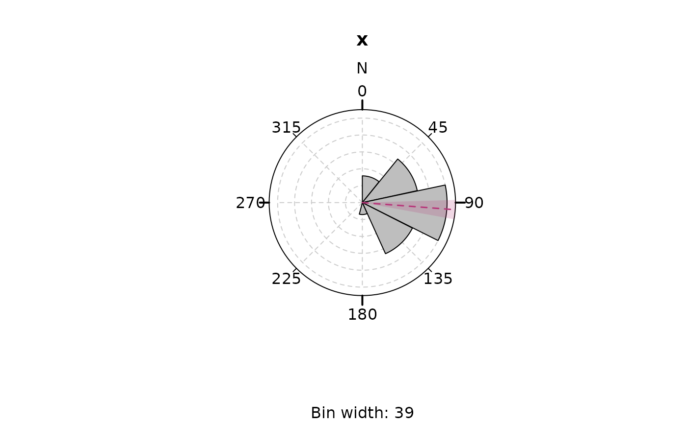
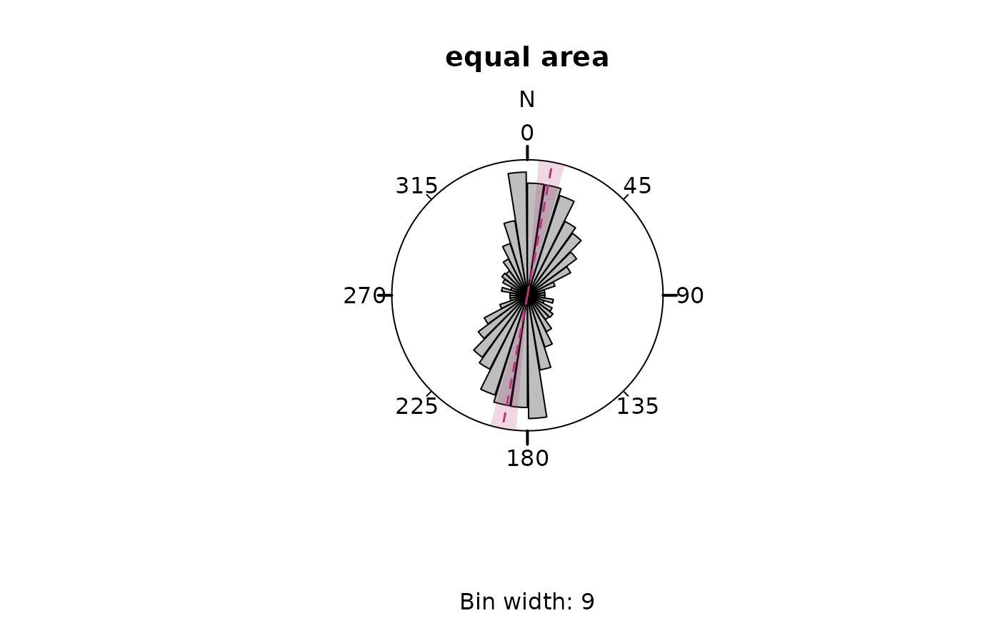
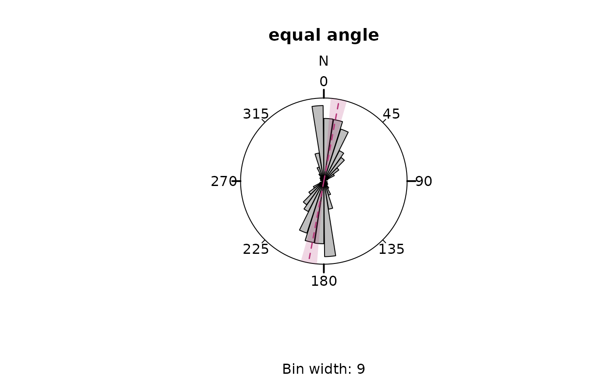
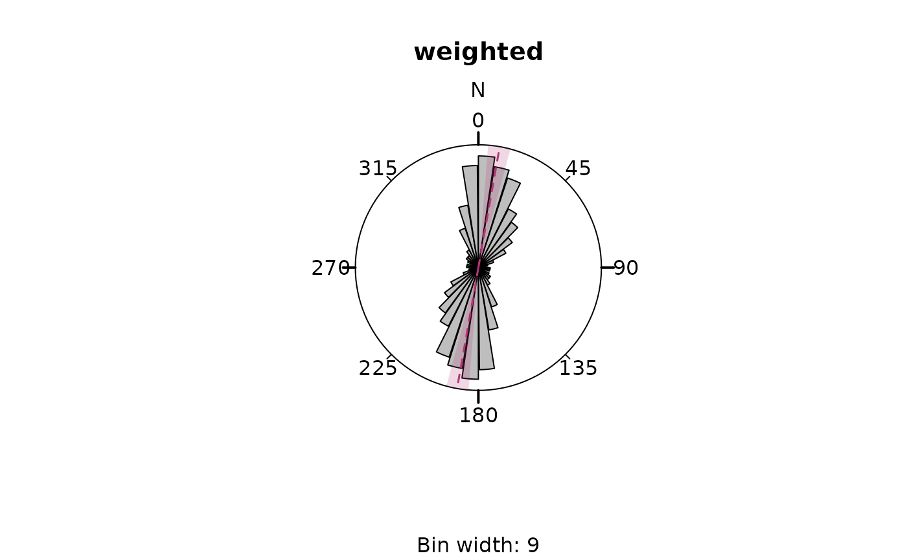
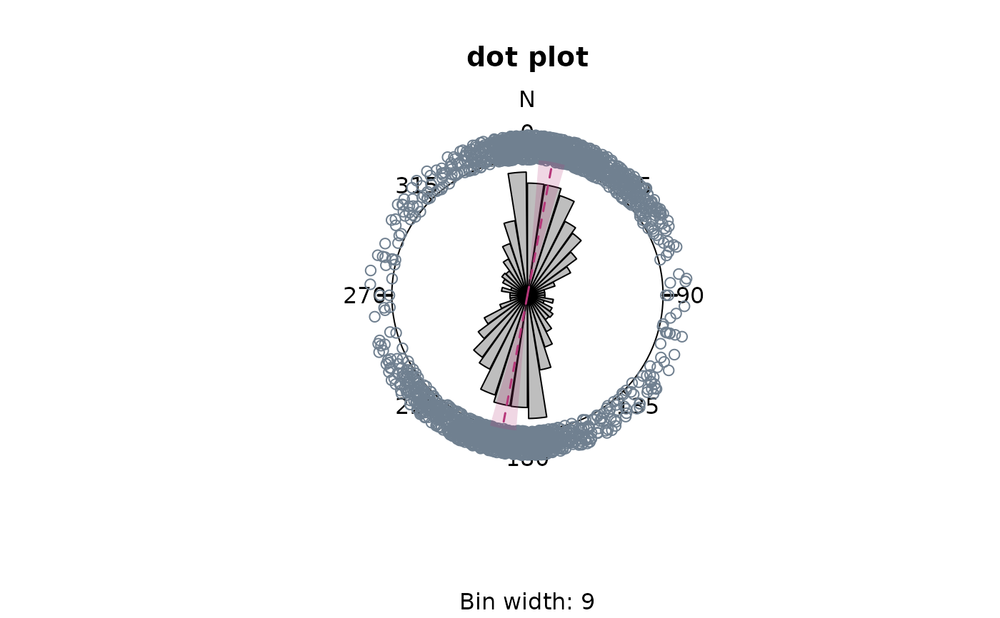

Plots a rose diagram (rose of directions), the analogue of a histogram or density plot for angular data.
Usage
rose(
x,
weights = NULL,
binwidth = NULL,
bins = NULL,
axial = TRUE,
equal_area = TRUE,
muci = TRUE,
round_binwidth = 0,
mtext = "N",
main = NULL,
sub = NULL,
at = seq(0, 360 - 45, 45),
cborder = TRUE,
labels = TRUE,
col = "grey",
dots = FALSE,
dot_pch = 1,
dot_cex = 1,
dot_col = "slategrey",
stack = FALSE,
jitter_factor = 0,
add = FALSE,
...
)Arguments
- x
Data to be plotted. A numeric vector containing angles (in degrees).
- weights
Optional vector of numeric weights associated with x.
- binwidth
The width of the bins (in degrees).
- bins
number of arcs to partition the circle width. Overridden by
binwidth.- axial
Logical. Whether data are uniaxial (
axial=FALSE) or biaxial (TRUE, the default).- equal_area
Logical. Whether the radii of the bins are proportional to the frequencies (
equal_area=FALSE, i.e. equal-angle) or proportional to the square-root of the frequencies (equal_area=TRUE, the default).- muci
logical. Whether the mean and its 95% CI are added to the plot or not.
- round_binwidth
integer. Number of decimal places of bin width (0 by default).
- mtext
character. String to be drawn at the top margin of the plot (
"N"by default)- main, sub
Character string specifying the title and subtitle of the plot. If
sub = NULL, it will show the bin width.- at
Optional vector of angles at which tick marks should be plotted. Set
at=numeric(0)to suppress tick marks.- cborder
logical. Border of rose plot.
- labels
Either a logical value indicating whether to plot labels next to the tick marks, or a vector of labels for the tick marks.
- col
fill color of bins
- dots
logical. Whether a circular dot plot should be added (
FALSEis the default).- dot_cex, dot_pch, dot_col
Plotting arguments for circular dot plot
- stack
logical. Groups and stacks the dots if
TRUE. Default isFALSE.- jitter_factor
Add a small amount of noise to the angles' radius that is added to
scale. Jitter is ignored whenstack==TRUE). If0, no jitter is added (by default); if negative, the points fall into the circle.- add
logical.
- ...
Additional arguments passed to
spatstat.explore::rose().
Value
A window (class "owin") containing the plotted region or a list
of the calculated frequencies.
Note
If bins and binwidth are NULL, an optimal bin width will be
calculated using Scott (1979):
$$ w_b = \frac{R}{n^{\frac{1}{3}}}
$$
with n being the length of x, and the range R being either 180 or 360
degree for axial or directional data, respectively.
If "axial" == TRUE, the binwidth is adjusted to guarantee symmetrical fans.
Examples
x <- rvm(100, mean = 90, k = 5)
rose(x, axial = FALSE, border = TRUE)

data("san_andreas") #'
rose(san_andreas$azi, main = "equal area")

rose(san_andreas$azi, equal_area = FALSE, main = "equal angle")

# weighted frequencies:
rose(san_andreas$azi, weights = 1 / san_andreas$unc, main = "weighted")

# add dots
rose(san_andreas$azi, dots = TRUE, main = "dot plot", jitter = .2)

rose(san_andreas$azi,
dots = TRUE, stack = TRUE, dot_cex = 0.5, dot_pch = 21,
main = "stacked dot plot"
)